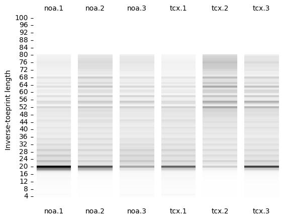
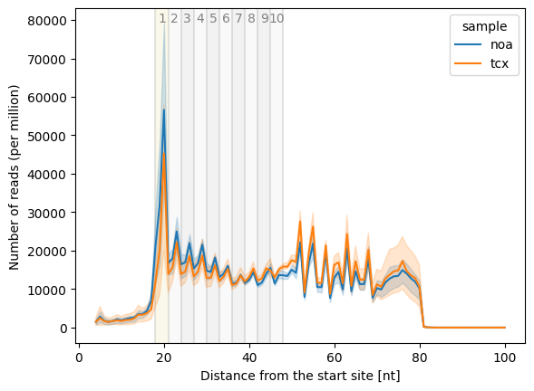
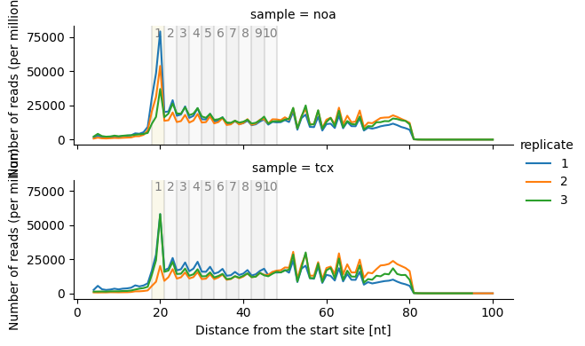
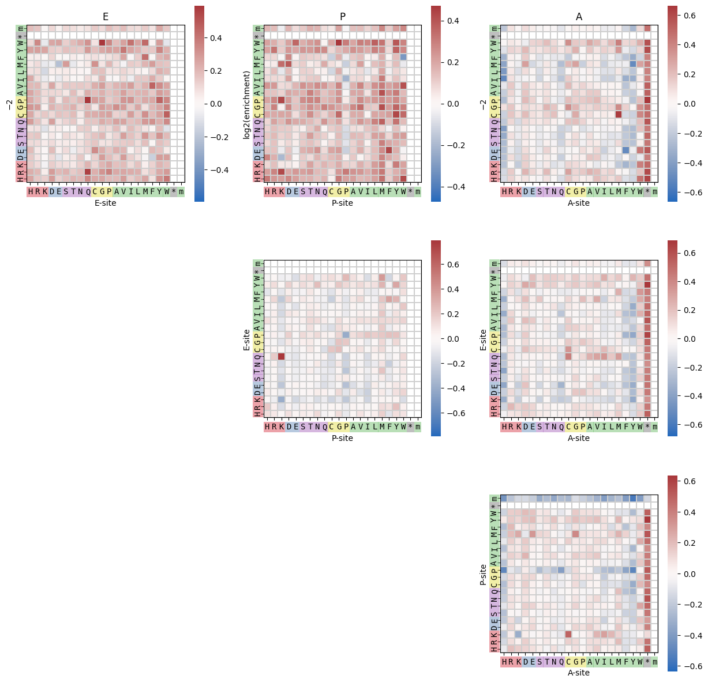
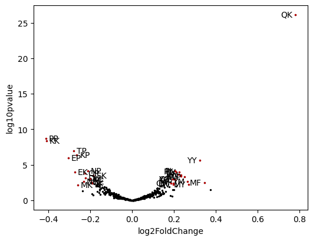

Creating graphs and tables¶
[1]:
from itpseq import DataSet
[2]:
data = DataSet('tetracenomycin/')
data
[2]:
DataSet(data_path=PosixPath('tetracenomycin'),
reference=Sample(noa:[1, 2, 3]),
samples=[Sample(noa:[1, 2, 3]),
Sample(tcx:[1, 2, 3], ref: noa)],
)
[3]:
data.itoeprint('shades')
[3]:
<Axes: ylabel='Inverse-toeprint length'>

[4]:
data.itp_len_plot()
[4]:
<Axes: xlabel='Distance from the start site [nt]', ylabel='Number of reads (per million)'>

[5]:
data.itp_len_plot(row='sample')
[5]:
<seaborn.axisgrid.FacetGrid at 0x7fba3413ad20>

[6]:
tcx = data.samples['tcx']
tcx
[6]:
Sample(tcx:[1, 2, 3], ref: noa)
[7]:
tcx.hmap_grid();

[8]:
tcx.DE(pos='E:P')
[8]:
| baseMean | log2FoldChange | lfcSE | stat | pvalue | padj | log10pvalue | log10padj | rank | qrank | |
|---|---|---|---|---|---|---|---|---|---|---|
| QK | 2388.608072 | 0.778417 | 0.072558 | 10.728162 | 7.507494e-27 | 3.153148e-24 | 26.124505 | 23.501256 | 20.335762 | 1.000000 |
| PP | 10164.907418 | -0.411741 | 0.068681 | -5.995011 | 2.034721e-09 | 4.272914e-07 | 8.691495 | 6.369276 | 3.578649 | 0.997619 |
| KK | 1925.860181 | -0.408997 | 0.069592 | -5.877081 | 4.175644e-09 | 5.845902e-07 | 8.379277 | 6.233149 | 3.427097 | 0.995238 |
| TP | 7266.661404 | -0.278591 | 0.052503 | -5.306210 | 1.119279e-07 | 1.175243e-05 | 6.951061 | 4.929872 | 1.936501 | 0.992857 |
| EP | 4319.078286 | -0.305248 | 0.062449 | -4.887962 | 1.018851e-06 | 7.131956e-05 | 5.991889 | 4.146791 | 1.829012 | 0.990476 |
| ... | ... | ... | ... | ... | ... | ... | ... | ... | ... | ... |
| SR | 5592.632930 | 0.001314 | 0.049817 | 0.026377 | 9.789566e-01 | 9.883697e-01 | 0.009237 | 0.005081 | 0.000012 | 0.011905 |
| IS | 2505.613096 | 0.001021 | 0.051881 | 0.019688 | 9.842921e-01 | 9.913733e-01 | 0.006876 | 0.003763 | 0.000007 | 0.009524 |
| HE | 1255.730106 | 0.001114 | 0.070616 | 0.015768 | 9.874192e-01 | 9.921437e-01 | 0.005498 | 0.003425 | 0.000006 | 0.007143 |
| TD | 2411.075474 | -0.000446 | 0.056517 | -0.007890 | 9.937051e-01 | 9.940898e-01 | 0.002742 | 0.002574 | 0.000001 | 0.004762 |
| DR | 2082.675944 | 0.000412 | 0.055557 | 0.007407 | 9.940898e-01 | 9.940898e-01 | 0.002574 | 0.002574 | 0.000001 | 0.002381 |
420 rows × 10 columns
[9]:
tcx.get_counts_ratio('E:P').sort_values(by='ratio', ascending=False)
[9]:
| noa.1 | noa.2 | noa.3 | tcx.1 | tcx.2 | tcx.3 | noa | tcx | ratio | |
|---|---|---|---|---|---|---|---|---|---|
| QK | 2014 | 1521 | 2079 | 3136 | 2888 | 2542 | 842.488457 | 1611.717538 | 1.913044 |
| WM | 90 | 57 | 77 | 113 | 89 | 58 | 33.060815 | 48.453429 | 1.465585 |
| MF | 190 | 135 | 165 | 221 | 163 | 173 | 72.748074 | 102.287249 | 1.406048 |
| YY | 1186 | 820 | 954 | 1284 | 976 | 1051 | 437.336974 | 609.545873 | 1.393767 |
| MY | 301 | 207 | 261 | 321 | 241 | 267 | 113.992118 | 152.365211 | 1.336629 |
| ... | ... | ... | ... | ... | ... | ... | ... | ... | ... |
| TP | 9366 | 6710 | 9416 | 7210 | 5702 | 5833 | 3812.390930 | 3466.791459 | 0.909348 |
| EP | 5583 | 4044 | 5639 | 3961 | 3528 | 3480 | 2284.621888 | 2052.122386 | 0.898233 |
| m | 1226086 | 770986 | 450057 | 740503 | 282179 | 690250 | 348210.205720 | 295241.808969 | 0.847884 |
| KK | 2747 | 1764 | 2555 | 1914 | 1282 | 1554 | 1047.897432 | 862.782356 | 0.823346 |
| PP | 12927 | 9580 | 14639 | 9281 | 7575 | 7989 | 5594.774388 | 4605.187585 | 0.823123 |
422 rows × 9 columns
[10]:
tcx.volcano(pos='E:P')
[10]:
<Axes: xlabel='log2FoldChange', ylabel='log10pvalue'>
